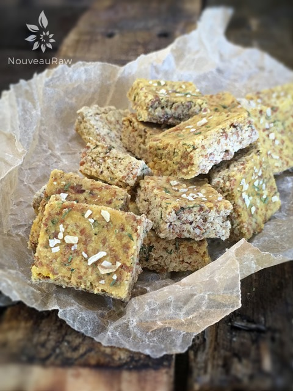
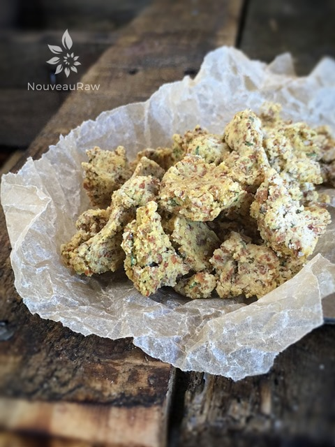

Onion and Dill Croutons

raw / vegan / gluten-free
I just love making croutons… creating all those itty-bitty squares is just way to much fun for me. By using almond pulp, these croutons come out very light, fluffy, and crisp. A perfect addition to any salad!
Or if you are anything like us, you find yourself curled up on the couch, popping one right after the other into your mouth.
Before you know it, you are looking down into the empty jar and asking, “Who ate all the croutons!??” One neat thing is that during the drying process is that the top darkens but the insides don’t… so in the end, they look just like they have been baked. Just a fine side-effect. hehe
You could use different nut pulps instead of just almonds. I have tried making them with ground almonds instead of the pulp and they were very dense. Dense isn’t bad though, but in the end, I like the texture of the pulp ones best.
Oh, gosh… I didn’t even take the time to explain what almond pulp for those of you who are new to it. It is a by-product after you make almond. Water and almonds are blended together to create a nut milk, then strained through a mesh bag.
The liquid is the milk and the stuff left inside of the bag… well that’s almond pulp. :) It’s pretty cool stuff to use in raw bread and cracker recipes too. Never toss the stuff! Well, I hope you enjoy this simple recipe. Many blessings, amie sue
Ingredients:
Yields 9 cups croutons
Preparation:
- In a large bowl combine almond pulp, nutritional yeast, coconut aminos, dill, onion powder, garlic powder, and salt.
- You will want to use your hands to make sure it is well incorporated, besides it feels wonderful squishing through your fingers.
- Place batter on the non-stick sheet that comes with the dehydrator, press it out with your hands.
- Place a second non-stick sheet (or plastic wrap) over the top of the batter and using a rolling pin, roll it out nice and evenly from edge to edge. The thickness is whatever you desire.
- Remove the top sheet after rolling it out, clean up the edges, and using a pizza cutter, ruler, or off-set spatula, create small squares.
- Dehydrate at 145 degrees (F) for 1 hour, then reduce to 115 degrees (F) and dehydrate until dry.
- Store in a sealed, glass container.
Culinary Explanations:
- Why do I start the dehydrator at 145 degrees (F)? Click (here) to learn the reason behind this.
- When working with fresh ingredients it is important to taste test as you build a recipe. Learn why (here).
- Don’t own a dehydrator? Learn how to use your oven (here). I do however truly believe that it is a worthwhile investment. Click (here) to learn what I use.

When creating croutons, you can be all formal and make neat little squares or…. like below, you can just pinch chunks of batter and drop them on the dehydrator sheet to create more of a rustic style.

© AmieSue.com